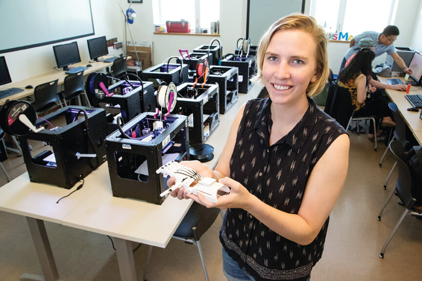

Fostering entrepreneurship and interdisciplinary team work
[caption id="" align="alignnone" width="864"] Nora Benson - undergraduate student who used the MakerLab.[/caption]{kind=link}
The MakerLab is featured as the cover story of this semester's Postmarks publication. Postmarks is an official publication of the University of Illinois News Bureau and is mailed to 65,000 parents of current and prospective undergraduate students. This story features our two for-credit courses (Digital Making, taught by Vishal Sachdev & Making Things, taught by Aric Rindfleisch) and alums from these courses, Cameron Alberg and Nora Benson (featured in the photo above).
Both classes will be offered in Spring 2016. If you are an Illinois undergraduate student and interested in taking either class, please send your resume to the instructors (Aric AT Illinois DOT edu or Vishal AT illinois DOT edu) , with a short note explaining your interest in the course and any skills/passions in making that you bring to the courses.
If the classes don't fit your schedule, or you are not able to get in, we do offer workshops every semester, so check out our schedule and sign up to Learn, Make and Share!